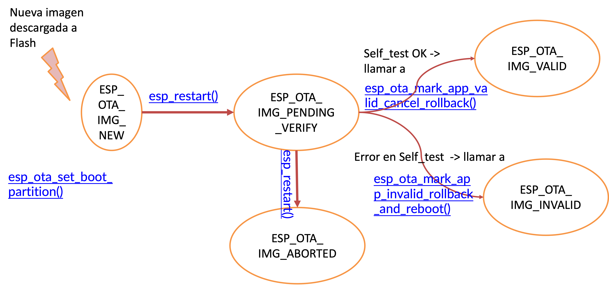

Práctica 7. Over-The-Air Updates (OTA)
Objetivos
El objetivo de esta práctica es familiarizarse con el concepto de OTA, la actualización del firmware de forma remota. Específicamente, usaremos el interfaz simplificado que ofrece ESP-IDF para realizar la actualización de aplicaciones.
Trabajaremos los siguientes aspectos:
- Actualización de firmware mendiante HTTPS.
- Incorporación de certificados en nuestra aplicación.
- Firmado de binarios.
Material de consulta
- Documentación sobre el mecanismo de OTA
- Documentación sobre el proceso de arranque segurlo
- Documentación sobre la tabla de particiones de ESP-IDF
- Ejemplos de OTA proporicionados por ESP-IDF
- Documentación sobre cómo incluir datos binarios/texto en la app
- Tutorial básico sobre TLS
Over-The-Air Update (OTA)
OTA es el nombre que suele dar al proceso de actualización de firmware de forma remota, independientemente del mecanismo de comunicación utilizado (WiFi, Bluetooth, Ethernet...). Dicho proceso implica la recepción de una nueva imagen, su escritura y comprobación en un dispositivo de almacenamiento (no volátil), y el posterior arranque a partor de la nueva imagen.
En un despliegue IoT, la funcionalidad OTA es imprescindible. Debe contemplarse desde el inicio en el diseño de la aplicación, porque su buen funcionamiento es crítico.
Particiones y tabla de particiones
Habitualmente, la imagen que se recibe vía red se almanceará en una partición diferente a la que se esté actualizando para ejecutar en el dispositivo. Una partición es una región de un dispositivo de almacenamiento que se gestiona de forma independiente. Se puede ver como un dispositivo virtual en sí mismo.
La tabla de particiones es la estructura que almacena la división del dispositivo de almacenamiento en particiones. La tabla indica el tamaño, tipo y ubicación de cada una. Se suele almacenar en una posición fija del propio dispositivo y ser de tamaño fijo.
En el caso concreto del ESP32 utilizado, la tabla de particiones se almacena en la flash (único dispositivo de almacenamiento presente), en el desplazamiento 0x8000 (32KiB más allá del comienzo de la flash). Tiene un tamaño de 3072 bytes, más un checksum MD5 almacenado tras la tabla para garantizar la integridad. Por tanto, se asigna un sector de flash (4KiB) para almacenar la tabla.
Por defecto, el contenido de la tabla en ESP32 es:
# ESP-IDF Partition Table
# Name, Type, SubType, Offset, Size, Flags
nvs, data, nvs, 0x9000, 0x6000,
phy_init, data, phy, 0xf000, 0x1000,
factory, app, factory, 0x10000, 1M,
Como se puede observar, justo tras la propia tabla (recordemos, en el desplazamiento 0x8000 y de tamaño un sector), se encuentra una partición de tipo nvs (Non-Volatile Storage API) cuyo cometido se observó en prácticas anteriores (almacenamiento de pares clave-valor). Esta partición, de 6 sectores (24KiB) por defecto, almacena infomración de la interfaz WiFi (entre otras) si se utiliza WIFI_STORAGE_FLASH como argumento de esp_wifi_set_storage() (y así es por defecto). Se recomienda que el mínimo de esta partición sea de 3 sectores, y que se haga mayor de 6 si se prevé almacenar mucha información propia de la aplicación.
La partición phy_init almacena datos de configuración para la inicialización del interfaz PHY. Por defecto, esta partición no se utiliza y los datos de inicialización del PHY se compilan en el propio binario de la aplicación. Si queremos que se cargue la configuración PHY desde esta partición (para, por ejemplo, particularizar el calibrado por dispositivo) debemos habilitar CONFIG_ESP_PHY_INIT_DATA_IN_PARTITION en menuconfig y volcar explícitamente la partición, ya que no se hace por defecto.
Finalmente, la partición factory de tipo app y subtipo factory es la partición donde escribiremos nuestro código (fichero .bin generado a partir del .elf) cuando volquemos el proyecto en la placa (idf.py flash -p <port>).
Particiones para OTA
En ESP-IDF, si nuestro proyecto quiere incorporar la posibilidad de actualizarse de forma remota, debemos preverlo desde el comienzo, pues son necesarias varias particiones específicas:
# Name, Type, SubType, Offset, Size, Flags
nvs, data, nvs, 0x9000, 0x4000
otadata, data, ota, 0xd000, 0x2000
phy_init, data, phy, 0xf000, 0x1000
factory, app, factory, 0x10000, 1M
ota_0, app, ota_0, , 1M
ota_1, app, ota_1, , 1M
nvs_key, data, nvs_keys, , 0x1000
Comparando con la tabla anterior, vemos dos tipo de particiones nuevas:
- otadata de tipo ota. Ocupa dos sectores y mantiene la información sobre las particiones ota_
existentes y su estado. Inicialmente, se debe inicializar a 0xFF (todo unos) para indicar que el arranque se debe hacer desde la partición factory - ota_0 y ota_1. Son dos particiones similares a factory, que almacenarán futuras imágenes recibidas por un interfaz de red. ESP-IDF exige que al menos tengamos dos de estas particiones, pero podemos incluir más.
OTA rollback
ESP-IDF incluye la posibilidad de hacer rollback tras recibir una nueva imagen. La secuencia de estados por los que pasa una partición es la siguiente:

Un posible código para usar esta funcionalidad sería:
void app_main(void) {
...
const esp_partition_t *running = esp_ota_get_running_partition();
esp_ota_img_states_t ota_state;
if (esp_ota_get_state_partition(running, &ota_state) == ESP_OK) {
if (ota_state == ESP_OTA_IMG_PENDING_VERIFY) {
// run diagnostic function ...
bool diagnostic_is_ok = diagnostic();
if (diagnostic_is_ok) {
ESP_LOGI(TAG, "Diagnostics completed successfully! Continuing execution ...");
esp_ota_mark_app_valid_cancel_rollback();
} else {
ESP_LOGE(TAG, "Diagnostics failed! Start rollback to the previous version ...");
esp_ota_mark_app_invalid_rollback_and_reboot();
}
}
}
Como se puede comprobar en la figura y en el código, en un arranque que se produce tras escribir una nueva imagen en flash deberíamos seguir los siguientes pasos:
- Conseguir el manejador de la partición activa (la que está ejecutando la imagen actualemnte) mediante
esp_ota_get_running_partition() - Conseguir el estado de dicha partición con
esp_ota_get_state_partition() - Realizar un diagnóstico para determinar si esta nueva imagen funciona adecuadamente (llamada a
diagnostic()en el código de ejemplo). Esta función la debemos desarrollar nosotros mismos, no forma parte de ESP-IDF porque es específica de nuestra aplicación. También es importante resaltar que no es una comprobación de la integridad de la imagen o un proceso de autenticación. La integridad se comprueba tras el envío. Para la autenticación (garantizar que el remitente es quien debe ser) podemos obligar a que la imagen venga firmada. ESP-IDF sí ofrece funcionalidad para esta comprobación. - Si la funcionalidad de la nueva imagen es correcta, llamaremos a
esp_ota_mark_app_valid_cancel_rollback()y el estado de esa partición pasará aESP_OTA_IMG_VALID. Los arranques posteriores (tras reset) seguirán siendo desde esta partición. - Si la funcionalidad de la nueva imagen no es correcta, llamaremos a
esp_ota_mark_app_invalid_rollback_and_reboot()y el estado de esa partición pasará aESP_OTA_IMG_INVALID. No se volerá a tratar de arrancar esta imange, y se volverá a marcar como activa la partición OTA que estuviéramos usando antes de iniciar el proceso de actualización.
Seguridad
Hay varios aspectos que debemos considerar en la seguridad de la operación OTA:
- El servidor del que descargamos la nueva imagen es de confianza (autenticación). Usar HTTPS es una opción segura, almacenando el certificado público de dicho servidor (o una cadena de certificados de confianza) en el nodo.
- Algunos dispositivos disponen de hardware específico para almacenar este tipo de secretos compartidos (claves públicas; también claves privadas en ocasiones), pero no es el caso de nuestro ESP32.
- Al usar HTTPS, se usará el protocolo TLS para garantizar la autenticación, integridad y confidencialidad de las comunicaciones. Para ello, debemos usar certificados TLS: una clave pública con cierta información incorporada. Este certificiado puede ser autofirmado, como haremos en esta práctica, o podemos tener que usar una entidad certificadora (CA - Certification Authority).
- Revisad las opciones de compilación para saber cómo podemos incrustar el certificado en nuestro binario
- La imagen recibida es de confianza. Parte de este aspecto queda cubierto por la garantía de integridad de TLS, pero podemos ir un paso más allá: podemos requerir que la imagen recibida esté firmada. Nuevamente, exigirá la generación de un par de claves para la firma del binario (con la clave privada) y su comprobación (con la clave pública). Puedes leer acerca de este proceso en la documentación de ESP-IDF
IMPORTANTE NO habilitéis nunca el arranque seguro (Secure Boot) en menuconfig. Una vez activado, no podemos desactivarlo, y supondría un problema para el hardware del laboratorio. Es posible habilitar únicamente la verficación de la APP sin el arranque segruo completo.
Ejercicios básicos
Vamos a partir del ejemplo de OTA básico. Estudia el código, y responde a las siguientes preguntas:
Cuestión
- ¿Qué entradas tiene la tabla de particiones usada?
- ¿Cómo se llama el fichero de certificado que se incluirá en el binario?
- ¿Cómo y dónde se indica que se debe incluir el certificado?
- ¿Qué es el símbolo server_cert_pem_start?
Tareas
- Hacer funcionar el ejemplo conectando a un servidor que estará ejecutando en el equipo del profesor. Se usará este certificado para la conexión segura por HTTP y la red WiFi creada en el laboratorio. Se proporcionaraán los credenciales de la WiFi y la IP del servidor durante el laboratorio.
- Alterar un byte del fichero del certificado y probar nuevamente.
- [Seguir los pasos del ejemplo]((https://github.com/espressif/esp-idf/tree/master/examples/system/ota) para crear vuestro propio servidor HTTPS y certificado y probad de nuevo.
Ejercicio avanzado
Integraremos OTA en la aplicación que hemos ido desarrollando a lo largo de estas prácticas (lectura periódica del sensor de temperatura).
Tareas
La aplicación inicial corresponderá con una aplicación similar a la de prácticas anteriores: una lectura periódica del sensor de temperatura. Se añadirá la siguiente funcionalidad:
- Cuando se reciba un evento externo (la pulsación de un botón o la lectura del sensor de infrarrojos de una distancia menor que un umbral), la aplicación se conectará al servidor HTTPS predefinido y se bajará la nueva imagen (si se usa MQTT, la URL del servidor y el nombre de la nueva imagen se pueden comunicar en el mensaje; pero el certificado debería estar preinstalado).
- Se desarrollará una función de auto-diagnóstico (self-test) que permita decidir si la nueva imagen se comporta de forma correcta.
- Se utilizará la opción de rollback para indicar si la nueva imagen se elige para futuros arranques o se marca como inválida.
Para investigar...
HTTPS (SSL/TLS) no exige tener pre-almacenado el certificado de cada servidor al que nos queramos conectar. Es el propio servidor el que envía el certificado, firmado con la clave privada de una autoridad certificador (CA) que sí debemos conocer. Es un papel similar al de un notario, que valida el certificado de un servidor para que podamos confiar en su identidad.
Investiga qué ofrece ESP-IDF para configurar así nuestro sistema, de modo que no tengamos que cargar el certificado de un servidor concreto, sino el de una CA (o una cadena de CAs). Enlaces recomendados para empezar: